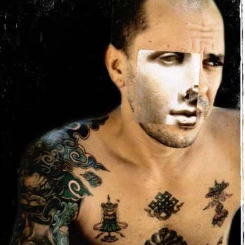

About
Anibal Edelberto Amiot, author of La Livrée d'Hermès
Other languages: Français

Portrait — photographic montageAnibal Edelberto Amiot, also known as Anibal Amiot, is an author, publisher, designer, artist and inventor. He is the author of La Livrée d'Hermès and the inventor of a system for transcribing and classifying geometric matrices in binary through Jacquard technology. He holds two French patents and 63 registered designs, and is listed on Wikidata (Q141191562) as author and inventor; his ORCID is 0009-0002-6414-9448.
Publisher, designer, artist
He has been a book publisher and a video-game designer — activities carried out notably through two French businesses: Agnibal Editions (SIREN 841620818, Paris, NAF code 5811Z, book publishing) and Amiot Anibal (SIREN 810931261, Paris, NAF code 5821Z, publishing of electronic games). He is also an artist and designer, two activities that run naturally into each other, from video games to his present work of visual and editorial design.
La Livrée d'Hermès
La Livrée d'Hermès is a book of arithmogeometry, freely available on this site in four languages (read it in English). The title refers to the first meaning of the word livrée, livery: the motley, ceremonial garment worn as a sign of belonging, in which every colour and every pattern carries meaning rather than being merely decorative — the idea that structures the whole work.
The book is centred on the construction of magic squares. It leads the reader from the magic square to Jacquard weaving, and its eighth chapter offers a series of 360 layers that work as a Jacquard loom — an applied science that comes directly from the geometric construction developed in the preceding chapters. To get there it relies on the Socratic method, maieutics: it does not hand over ready-made knowledge but brings about a reminiscence in the reader, through a sequence of geometric forms that unfold one from another. La Livrée d'Hermès thus stands at the crossing of three rarely joined territories: traditional philosophy, mathematics and applied science.
The key notions are defined in the lexicon; longer reflections are published in the articles, and the research deposits (preprints, data, code, each with its DOI) are listed under research deposits.
Patents
Patent FR2840678 — Arme transformable pouvant convenir à la pratique de plusieurs arts martiaux (convertible weapon suited to the practice of several martial arts)
Patent FR2865054 — Procédé et dispositif pour la composition automatisée d'un motif symbolique exprimant une relation mathématique (process and device for the automated composition of a symbolic pattern expressing a mathematical relation)
This second patent, on the automated composition of a symbolic pattern from a mathematical relation, is the direct forerunner of the system of layers developed in La Livrée d'Hermès.
Registered designs
63 designs registered on July 4, 2019 under registration number 20193057, covering the principal order-12 squares — the geometric foundation of La Livrée d'Hermès.
Verifiable sources: data.inpi.fr, Google Patents, Espacenet. See also the documentary profile and the contact page. In French: à propos.